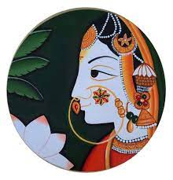

Hello.
I'm a Full Stack Web Developer.I❤️coffee and coding.
My Skills.

Design and Development
I started learning to code when i was in 12th std because I wanted to be a Full Stack Web Developer. Coding is the language of the future,coding is fun, collaborative and creative. Learning to code is a fantastic opportunity.

Painting
Painting gives you a an opportunity to relax, enjoy and learn. I have always been keen of painting ever since my childhood. I started painting as a hobby when I was little. I can't imagine my life without colours. Painting is silent poetry, and poetry is a painting that speaks. Painting is just another way of keeping a diary.